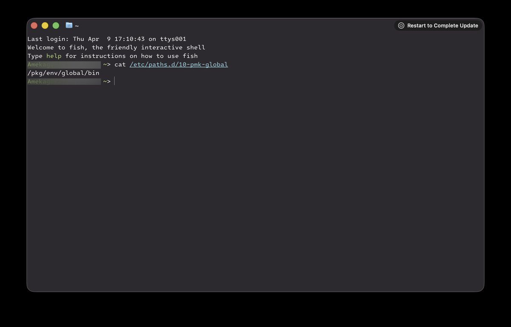
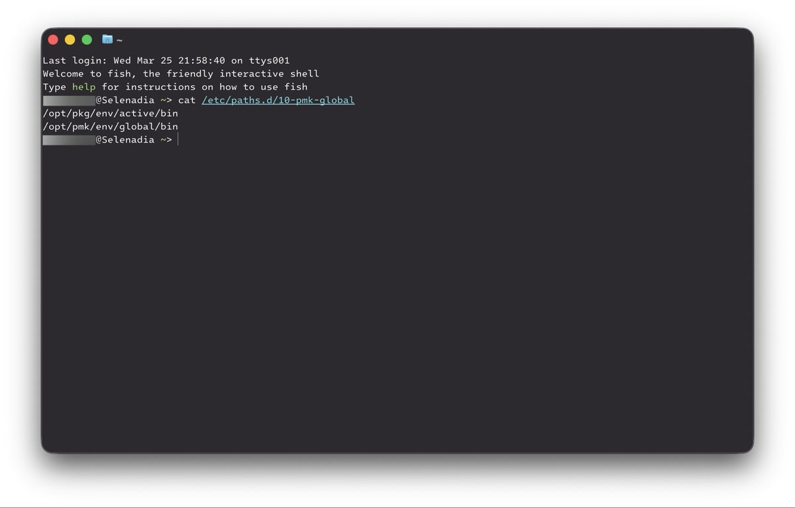

在3月30日更新至macOS 26.5 beta (25F5042g)后，由`/etc/paths.d/10-pmk-global`所添加的PATH整合为了单独的一条`/pkg/env/global/bin`，采用了尚不存在的单独根下文件夹，更加区别于一般包管理器的做法（由于synthetic.conf的繁琐，除了Nix没人有心情做）。同时pmk不再暴露为路径名，可能真是个框架。



我押macOS 27作为苹果专注于底层优化的一代，会推出自家的包管理器/包管理接口，现在留的PATH就是将来要用的东西。一个`/opt/pkg/env/active/bin`，一个`/opt/pmk/env/global/bin`，我认为前者是用户侧的包管理器，后者是更底层的Package Management Kit，而且从active来说很可能像Nix有滚动配置文件。 https://t.co/lisyvxrg3J